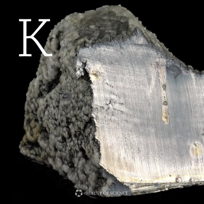
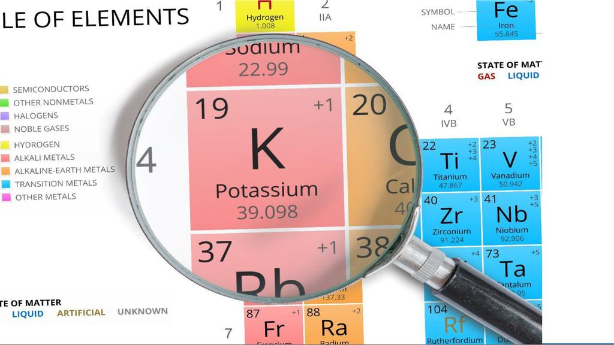
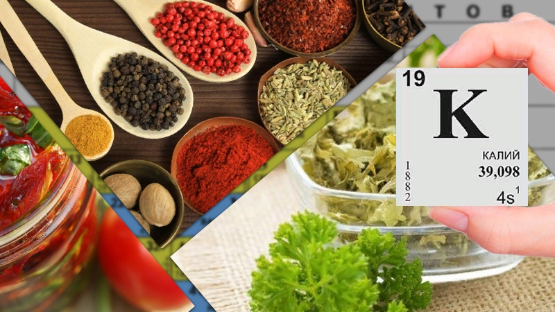

Калий

Ка́лий (химический символ — K, от лат. Kalium) — химический элемент 1-й группы (по устаревшей классификации — главной подгруппы первой группы, IA), четвёртого периода периодической системы химических элементов Д. И. Менделеева, с атомным номером 19. Простое вещество калий — мягкий щелочной металл серебристо-белого цвета. В природе калий встречается только в соединениях с другими элементами, например, в морской воде, а также во многих минералах.

Некоторые соединения калия были известны в древности, например карбонат калия K2CO3 (т. н. растительная щёлочь) выделяли из древесной золы и использовали при варке мыла. Металлический калий впервые получил Г. Дэви в 1807 г. электролизом влажного твёрдого гидроксида KOH и назвал потассием (англ. potassium от англ. potash – название карбоната калия). В 1809 г. было предложено название «калий» (от араб. القلوي – поташ). Название «потассий» сохранилось в Великобритании, США, Франции и других странах. В России с 1840 г. употребляют название «калий», принятое также в Германии, Австрии, Скандинавских странах.
Содержание калия в земной коре составляет 2,6 % по массе. В свободном состоянии калий в природе не встречается. В значительных количествах калий содержится в силикатах нефелине и лейците, полевых шпатах (например, в ортоклазе), слюдах (например, в мусковите). Собственные минералы калия – сильвин, карналлит, каинит, лангбейнит K2SO4·2MgSO4 – образуют большие скопления природных калийных солей. В результате действия воды и диоксида углерода калий переходит в растворимые соединения, которые частично уносятся в моря, частично удерживаются почвой. Соли калия содержатся также в рапе соляных озёр и подземных рассолах.Калий относится к биогенным элементам. Суточная потребность человека в калии около 2 г. В живых организмах ионы калия играют важную роль в процессах регуляции обмена веществ, в частности транспорта ионов через клеточные мембраны.

Металлический калий – материал электродов в химических источниках тока, катализатор в процессах получения синтетического каучука. Широко применяют различные соединения калия: пероксид K2O2 и надпероксид KO2 – компоненты составов для регенерации кислорода (на подводных лодках, космических кораблях и в других закрытых помещениях), гидрид KH – восстановитель в химическом синтезе, сплав калия с натрием (10–60 % Na по массе, жидкий при комнатной температуре) – теплоноситель в ядерных реакторах, восстановитель в производстве титана, реагент для очистки газов от кислорода и паров воды; соли калия используют в качестве калийных удобрений, компонентов моющих средств. Комплексы калия с ионофорами являются моделями для изучения транспорта ионов калия через клеточные мембраны. Радиоизотоп 42K (T1/2 12,36 ч) применяют как радиоактивный индикатор в химии, медицине и биологии.